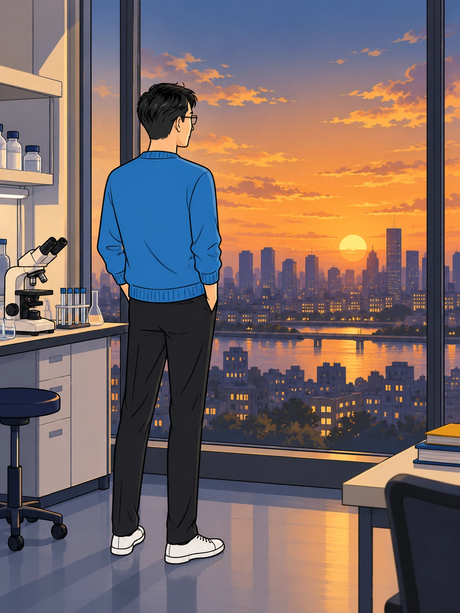
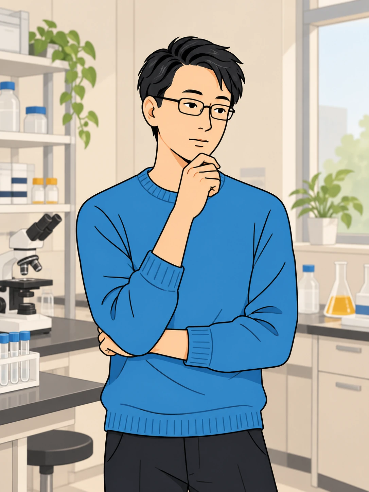
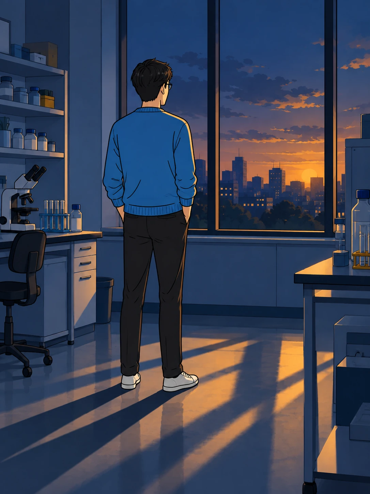

若き空不動先生
科学で、この世界を
理解したかった。

世界のしくみを、
自分の目で確かめたい。
信じるのは、
確かめられるものだ。
根拠を求める。
疑問を、そのままにしない。
神についても、
その姿勢は変わらなかった。

神はいない。
ほとんど、そう思っていた。
だが、神がいないと
証明されたわけでもない。

青年の心にあったのは——
99%
神はいない、という思い。
それでも、消せない。
1%
まだ否定しきれない、可能性。
その小さな問いを、
閉じることはできなかった。
もし、神が存在するのなら。
絶対普遍の神でなければ
意味がない。
その問いは、
まだ静かに胸の中にあった。

やがて、突然の病が、
青年の日常を変えていく。